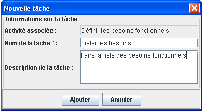

Gestion des taches
L'utilisateur a la possibilité de rajouter et de planifier des tâches.
Procédure d'ajout d'une nouvelle tâche :
- Se placer sur la zone d'exploration du projet.
- Développer les définitions de travail.
- Choisir et développer l'activité concernée.
- Choisir et faire un click droit sur le "task descriptor" où l'on veut rajouter la tâche.
- Cliquer sur "Ajouter une nouvelle tâche".
Une boîte de dialogue apparaît.
- Saisir le nom de la tâche (obligatoire).
- Saisir la description d'une tâche (facultatif).
- Puis valider en cliquant sur "Ajouter".
Planification et modification des taches:
En cliquant sur une tâche, dans la section "information sur la tâche" :
- Modifier les champs qui vous intéressent.
- Valider en cliquant sur "Enregistrer".
Si des artéfacts ont été déjà défini (consulter l'aide sur la "gestion des artéfacts")
L'utilisateur a la possibilité de rajouter des artéfacts en entrée ou en sorite des tâches.
Deux possibilités de faire :
- Soit en faisant glissé, à partir de l'explorateur du projet, de l'artéfact sur la tâche concerné.
- Ou sur le détail d'une tâche en cliquant sur "Définir artefacts".
Il est possible d'assigner une ressource à une tache, directement sur l'arborescence, en
faisant glisser une ressource sur le rôle désiré, puis de faire glissé la ressource sur la tâche
désirée.
